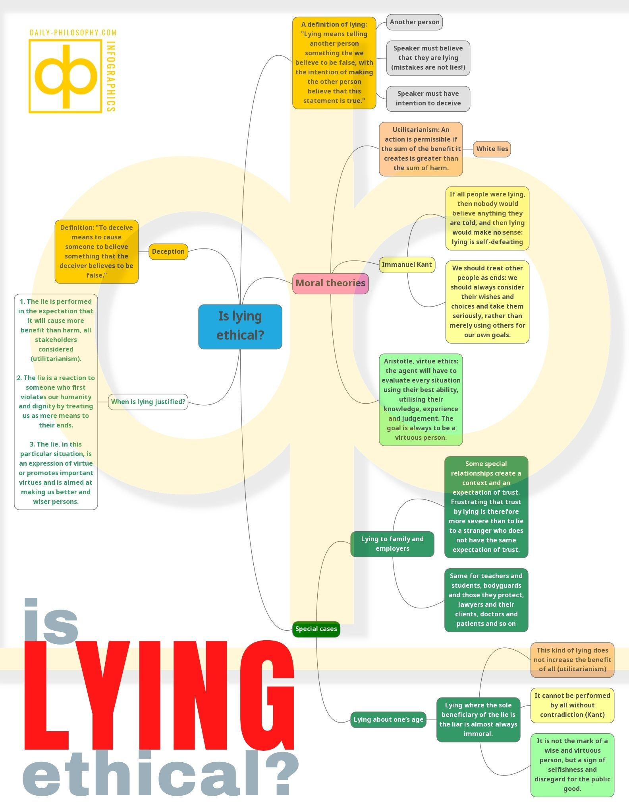

Is Lying Ethical?
Lying, deception and when they are justified
If you like reading about philosophy, here's a free, weekly newsletter with articles just like this one: Send it to me!
What is lying?
A definition of lying:
Lying means telling another person something the we believe to be false, with the intention of making the other person believe that this statement is true.
According to this definition:
- There must be another person to which one is telling the lie;
- The speaker must believe that they are saying something that is not true;
- There must be an intention to deceive the other person.
These are important considerations, because, for example, if the speaker says something that is not true, but they do believe it to be true, then they are not telling a lie. Your friend who thinks that he has been visited by aliens in his sleep last week is not lying to you, if he really believes that the aliens came for him.
A little more tricky is the last requirement: The liar must have the intention of making the other person believe that the statement is true.
Is a movie about James Bond a lie? Although it depicts events that never happened and the people who made it also knew very well that 007 is fictional, we would not say that the filmmakers are lying to us. This is because we all know that this is a fictional story. The filmmakers do not try to sell it as a documentary of real events. They intend to entertain the audience, not to deceive them into believing that James Bond exists.
On the other hand, a “documentary” about aliens that tries to convince the viewer of their existence by faking photographs and dressing up children in aluminium foil does constitute a deception. The aim of the filmmakers in this case is to deceive the viewer.

Lying and deception
Deception is a wider concept than lying.
To deceive means to cause someone to believe something that the deceiver believes to be false.
Deception, as opposed to lying, is not restricted to statements. I can deceive someone by planting fake evidence, for example. Or I can deceive by doing nothing. A real estate agent who knows that the government is planning to build a highway close to a house and does not tell the buyer about it, is deceiving the buyer without actually doing anything.
When is lying permissible?
Lying and deception may sometimes be morally permissible. Different moral theories have different opinions on this.
Utilitarianism would say that an action is permissible if the sum of the benefit it creates is greater than the sum of harm. Sometimes, lying or deception can be more beneficial than harmful: for example, if you deceive a burglar into believing that your house is protected by installing fake security cameras on the outside, then this is clearly a permissible deception.
“White lies” are another permissible form of lie. If you don’t want to visit your colleague this afternoon, you might tell them that you have another appointment, instead of telling them directly that you are bored in their company. In these cases, telling the truth would be more harmful than lying.
Kantian ethics (named after philosopher Immanuel Kant, 1724-1804) emphasises that we should always act rationally. This means that we should not choose actions that would become impossible or meaningless if everyone performed them. Lying, in any form and for any purpose, is such an action. Lying only works when everyone generally tends to tell the truth. If all people were lying, then nobody would believe anything they are told, and then lying would make no sense: lying is self-defeating.
Also, Kant says that we should treat other people as ends, meaning that we should always consider their wishes and choices and take them seriously, rather than merely using others for our own goals.
In the case of the white lie, I would have to consider whether the person I’m lying to would actually prefer to know the truth. It is not entirely clear whether my colleague, whom I don’t want to meet, might prefer to be deceived about whether I like to meet them or not. In the case of the burglar, it seems clear that he would prefer to know the truth about my fake cameras, so that he can go on with his business and break into my house. But there’s a catch: the burglar himself is not treating me as an end in the first place. He is not respecting my wish to not be his victim. Therefore, he is the one who is first violating Kant’s ethics by trying to rob my house. And therefore, I am justified in preventing this immoral action against me.

Kant’s Ethics: What is a Categorical Imperative?
Kant’s ethics is based on the value of one’s motivation and two so-called Categorical Imperatives, or general rules that must apply to every action.
For Aristotle’s virtue ethics, lying is clearly not a virtue; honesty is. But things are more complex. Overdoing honesty to the point where it becomes harmful to the honest person as well as to others is not a good course of action either. So Aristotle would not say that I have to tell the burglar that my cameras are fake. All things considered, by deceiving the burglar, I have reached a situation where I am not less virtuous (since protecting oneself from immoral actions is not a lack of virtue), and I also prevented the burglar from doing something bad. In a sense, I have promoted the virtuous choice of the burglar by scaring him off. Whether this would apply to other lies and deception can, according to Aristotle, be judged only separately for each individual case. Aristotelian ethics does not provide general and abstract rules of conduct, but emphasises that the agent will have to evaluate every situation using their best ability, utilising their knowledge, experience and judgement. The overarching goal is always to be a virtuous person, rather than, say, to benefit oneself at the cost of others.
For example, I might be poor and not have enough to eat and to feed my child at the same time. So I might give the last food I have to my child. If the child asks me if I am not hungry myself, I might lie and say that I have already eaten. In this case, my lie is an expression of a virtuous and noble state of mind and virtue ethics would probably not object to it.

Click to download in full size.
Justified lying
To summarise, one would be justified in lying if:
-
The lie is performed in the expectation that it will cause more benefit than harm, all stakeholders considered (utilitarianism).
-
The lie is a reaction to someone who first violates our humanity and dignity by treating us as mere means to their ends.
-
The lie, in this particular situation, is an expression of virtue or promotes important virtues and is aimed at making us better and wiser persons.

In utilitarianism, stealing would only be immoral if it leads to bad consequences for the stakeholders. For Kant, it would always be immoral.
Is lying a sin for Christians?
There has been a lot of discussion among Christian theologians over the centuries about whether every act of lying is to be considered a sin.
Clearly, the Bible and most theologians consider lying sinful and against the will of God. In the Ten Commandments, we read: “You shall not bear false witness against your neighbour” (Exodus 20:16). But the Bible also tells of cases where lying was performed for a good purpose, and God seems to accept this kind of lying as (at least) justifiable:
17 The midwives, however, feared God and did not do what the king of Egypt had told them to do; they let the boys live. 18 Then the king of Egypt summoned the midwives and asked them, “Why have you done this? Why have you let the boys live?”
19 The midwives answered Pharaoh, “Hebrew women are not like Egyptian women; they are vigorous and give birth before the midwives arrive.”
20 So God was kind to the midwives and the people increased and became even more numerous. 21 And because the midwives feared God, he gave them families of their own. (Exodus 1:17-21, NIV)
Consider also that we cannot always say what actually constitutes lying. Is deception through silence “lying”? And what if it is done in the service of charity or to uphold some more important Christian value?
Note also that the Ten Commandments prohibit only lying to one’s “neighbour”. This is often understood to mean other Christians. So it might be unclear whether we are allowed to lie to people who are not part of the Christian community, or who are even enemies of Christianity. If an unjust ruler savagely persecutes Christians without a good reason, is a member of that Christian community allowed to lie in order to save others from suffering and probable death?
In conclusion, although there is understood to be a general Christian prohibition of lying and deception, there might be cases where Christian charity or other Christian values make lying seem justified. But, as is often the case in religious matters, there is a lot of disagreement about this.
Is lying a “mortal sin”?
According to Britannica, a mortal sin in Roman Catholicism is:
According to the Compendium of the Catechism of the Catholic Church, how grave a sin is depends on “the truth it deforms, the circumstances, the intentions of the one who lies, and the harm suffered by its victims.”
Most everyday lies would probably not be grave enough to be classified as a “deliberate turning away from God and destroying charity in the heart of the sinner,” particularly if we are talking of white lies that are intended to avert harm from others. But, of course, there might be situations where someone employs a lie in order to bring about someone else’s death or to cause other grave harm, and in this case, the lie might be a cardinal or mortal sin.
Lying in partnerships and families
Lying in partnerships and families is special, because a partnership or a family bond creates additional moral obligations that we don’t have towards a stranger. For example, I am not morally required to feed every hungry stranger that I may come along (although if I did, I would be praised for doing so), but I am required to make sure that my own children are fed and taken care of. If I tell a small lie about how good my French is in a job interview, this might be seen as less problematic than telling a small lie about my previous love affairs to my spouse.
Just the fact that we have this special relationship creates a context and an expectation of trust. Frustrating that trust by lying is therefore more severe than to lie to a stranger who does not have the same expectation of trust.
The same applies to other kinds of relationships, for example employment. Deceiving one’s employer is generally considered worse than deceiving prospective customers in advertisements. This is not only because there is less of an expectation that ads will be truthful (everyone expects ads to at least exaggerate the good qualities of the product they advertise), but also because one’s employer usually expects loyalty as part of the special employment relationship. And similar arguments can be made for any other kind of relationship that creates a special context of trust between parties, e.g. teachers and students, bodyguards and those they protect, lawyers and their clients, doctors and patients and so on.
Is lying about one’s age immoral?
A common lie among young people is lying about one’s age. Is this immoral?
Generally, the aim of lying about one’s age would be to get access to rights or benefits that are restricted to particular age groups. One might lie to get access to alcohol in a shop, to be allowed to smoke, or (by pretending to be younger or older than one is) to be allowed to use a cheaper ticket on public transport.
In most such cases, the liar is the sole beneficiary of the lie. Often, society at large is harmed by such a lie: access to alcohol and tobacco is restricted to adults for good reasons, and claiming a discount to which one is not entitled harms the service operator without providing the social benefit that the discount aims to provide.
Therefore, all moral theories would agree that such lying is unethical: it does not increase the benefit of all (utilitarianism); it cannot be performed by all without contradiction (Kant); and it is not the mark of a wise and virtuous person, but a sign of selfishness and disregard for the public good.
Your ad-blocker ate the form? Just click here to subscribe!
Further reading
[1] Mahon, James Edwin, “The Definition of Lying and Deception”, The Stanford Encyclopedia of Philosophy (Winter 2016 Edition), Edward N. Zalta (ed.), online at: https://plato.stanford.edu/archives/win2016/entries/lying-definition/.
[2] Wikipedia contributors. (2021, February 20). Christian views on lying. In Wikipedia, The Free Encyclopedia. Retrieved 05:41, November 1, 2021, from https://en.wikipedia.org/w/index.php?title=Christian_views_on_lying&oldid=1007830805
Cover image in public domain, via Wikimedia Commons: https://commons.wikimedia.org/wiki/File:Pinocchio_1940.jpg